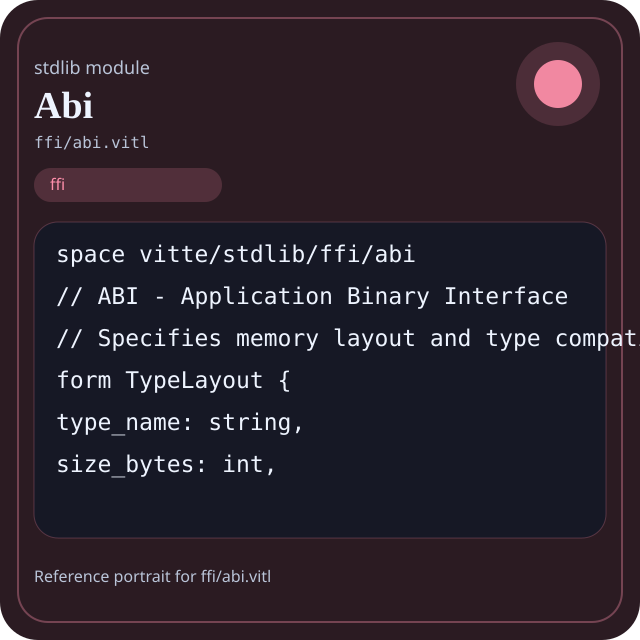

Stdlib module ffi/abi.vitl
This page is a wiki-style reference for one concrete stdlib file. It explains what the file owns, where it fits in the family, and how to decide whether this is the right surface to depend on.

ffi/abi.vitl.Family: ffi
Kind: public stdlib surface
Page style: this reference follows the same “encyclopedic card + portrait + usage contract” logic as the keyword pages, but for stdlib modules.
Summary
- Overview
- Purpose
- Taxonomy
- Implementation profile
- Top-level API inventory
- Position in family
- Declaration map
- Representative signatures
- How to use this module
- User example
- Keyword coverage
- Source shape
- Source landmarks
- Source organization
- Complete API catalog
- Integration boundaries
- Composition guidance
- Relationship table
- Neighbor modules
Overview
| Field | Value |
|---|---|
| Path | ffi/abi.vitl |
| Family | ffi |
| Kind | public stdlib surface |
| Line count | 559 |
| Declared procedures | 31 |
| Declared forms/picks | 7 |
`ffi/abi.vitl` is a public stdlib surface inside the `ffi` family. It should be read as one focused slice of the broader family responsibility: ABI and foreign-function boundaries used when Vitte code must cross language or runtime edges.
Purpose
This file should be chosen because of responsibility, not because its name “sounds close enough”. Inside the ffi family, it carries one focused part of the contract and keeps that responsibility separate from neighboring concerns.
- A system integration module can expose a narrow ABI-facing wrapper while the rest of the program stays pure.
- A runtime boundary should say exactly when the library stops and the foreign surface begins.
Taxonomy
Think of this page as a generated encyclopedia entry rather than a hand-written tutorial. The goal is to show what kind of module this is, how dense it is, and what reading strategy makes sense before depending on it.
- Large algorithm surface: this file exposes many procedures and likely acts as a domain toolkit rather than a single thin wrapper.
- Owns domain vocabulary: the module declares data shapes in addition to executable helpers, so its types are part of the contract.
- Minimal top-level dependencies: the module reads as mostly self-contained from its opening declarations.
Implementation profile
This profile is inferred directly from the source text. It does not replace reading the file, but it tells you quickly whether the module is mostly declarative, loop-heavy, branch-heavy, or organized around many small exits.
| Signal | Count | What it suggests |
|---|---|---|
if | 47 | Branching density and local decision-making. |
while | 3 | Loop-heavy or iterative implementation style. |
for | 5 | Collection-style traversal at source level. |
match | 0 | Variant-driven branching or grammar-style decoding. |
let | 32 | Local state and intermediate value density. |
give | 74 | Number of explicit exit points and result shaping. |
Top-level API inventory
| Surface | Items |
|---|---|
| Procedures | c_type_sizes, vitte_to_c_type, type_size, type_alignment, calculate_struct_layout, struct_field_offset, calling_conv_sysv_x64, calling_conv_microsoft_x64, calling_conv_aapcs_arm64, calling_conv_riscv64_lp64d, calling_conv_for_platform, abi_profile_linux_x86_64 |
| Forms | TypeLayout, FieldLayout, CallingConvention, ABIProfile, MemoryBlob, Platform, ABIVersion |
| Picks | none declared at top level |
| Constants | none declared at top level |
| Exports | none declared at top level |
Imported surfaces
This file does not advertise a top-level `use` surface in its opening declarations. That often means it is either self-contained or an aggregation layer.
Position in family
This file is module 1 of 2 in the ffi family when ordered by path. By procedure count it ranks 1, and by line count it ranks 1. Those ranks are useful as rough signals of breadth, not as quality judgments.
Declaration map
The declaration map turns raw source into a scan-friendly catalog. It is useful when the file is large enough that a reader wants to orient by kinds of surfaces first.
| Line | Name | Kind | Role |
|---|---|---|---|
| 1 | vitte/stdlib/ffi/abi | space | Declares the namespace that anchors this file in the stdlib tree. |
| 6 | TypeLayout | form | Introduces a structured data shape that other procedures can exchange. |
| 13 | FieldLayout | form | Introduces a structured data shape that other procedures can exchange. |
| 21 | c_type_sizes | proc | Represents one top-level surface in the file contract and should be read as part of the module boundary. |
| 41 | vitte_to_c_type | proc | Represents one top-level surface in the file contract and should be read as part of the module boundary. |
| 62 | type_size | proc | Represents one top-level surface in the file contract and should be read as part of the module boundary. |
| 113 | type_alignment | proc | Represents one top-level surface in the file contract and should be read as part of the module boundary. |
| 119 | calculate_struct_layout | proc | Represents one top-level surface in the file contract and should be read as part of the module boundary. |
| 173 | struct_field_offset | proc | Represents one top-level surface in the file contract and should be read as part of the module boundary. |
| 187 | CallingConvention | form | Introduces a structured data shape that other procedures can exchange. |
| 195 | ABIProfile | form | Introduces a structured data shape that other procedures can exchange. |
| 209 | calling_conv_sysv_x64 | proc | Represents one top-level surface in the file contract and should be read as part of the module boundary. |
| 222 | calling_conv_microsoft_x64 | proc | Represents one top-level surface in the file contract and should be read as part of the module boundary. |
| 235 | calling_conv_aapcs_arm64 | proc | Represents one top-level surface in the file contract and should be read as part of the module boundary. |
| 248 | calling_conv_riscv64_lp64d | proc | Represents one top-level surface in the file contract and should be read as part of the module boundary. |
| 261 | calling_conv_for_platform | proc | Represents one top-level surface in the file contract and should be read as part of the module boundary. |
| 284 | abi_profile_linux_x86_64 | proc | Represents one top-level surface in the file contract and should be read as part of the module boundary. |
| 299 | abi_profile_linux_arm64 | proc | Represents one top-level surface in the file contract and should be read as part of the module boundary. |
| 314 | abi_profile_linux_riscv64 | proc | Represents one top-level surface in the file contract and should be read as part of the module boundary. |
| 329 | abi_profile_macos_x86_64 | proc | Represents one top-level surface in the file contract and should be read as part of the module boundary. |
| 344 | abi_profile_macos_arm64 | proc | Represents one top-level surface in the file contract and should be read as part of the module boundary. |
| 359 | abi_profile_windows_x86_64 | proc | Represents one top-level surface in the file contract and should be read as part of the module boundary. |
| 374 | abi_profile_for | proc | Represents one top-level surface in the file contract and should be read as part of the module boundary. |
| 402 | abi_profile_current | proc | Represents one top-level surface in the file contract and should be read as part of the module boundary. |
| 407 | abi_profile_valid | proc | Represents one top-level surface in the file contract and should be read as part of the module boundary. |
| 439 | abi_profiles_self_check | proc | Represents one top-level surface in the file contract and should be read as part of the module boundary. |
| 460 | MemoryBlob | form | Introduces a structured data shape that other procedures can exchange. |
| 467 | alloc_native | proc | Represents one top-level surface in the file contract and should be read as part of the module boundary. |
| 478 | free_native | proc | Represents one top-level surface in the file contract and should be read as part of the module boundary. |
| 484 | memory_read_i32 | proc | Owns byte movement or host I/O interaction. |
| 490 | memory_write_i32 | proc | Owns byte movement or host I/O interaction. |
| 496 | memory_read_cstring | proc | Owns byte movement or host I/O interaction. |
| 502 | memory_write_cstring | proc | Owns byte movement or host I/O interaction. |
| 508 | Platform | form | Introduces a structured data shape that other procedures can exchange. |
| 515 | current_platform | proc | Represents one top-level surface in the file contract and should be read as part of the module boundary. |
| 528 | platform_matches | proc | Represents one top-level surface in the file contract and should be read as part of the module boundary. |
| 534 | ABIVersion | form | Introduces a structured data shape that other procedures can exchange. |
| 540 | current_abi_version | proc | Represents one top-level surface in the file contract and should be read as part of the module boundary. |
| 548 | abi_version_compatible | proc | Represents one top-level surface in the file contract and should be read as part of the module boundary. |
The table is exhaustive for top-level declarations of the selected kinds. This file declares 39 matching surfaces.
Representative signatures
These signatures are shown in source order so the page keeps the feel of a reference manual, not just a keyword cloud.
form TypeLayout {(line 6)form FieldLayout {(line 13)proc c_type_sizes() -> [int] {(line 21)proc vitte_to_c_type(vitte_type: string) -> string {(line 41)proc type_size(type_name: string) -> int {(line 62)proc type_alignment(type_name: string) -> int {(line 113)proc calculate_struct_layout(struct_name: string, field_names: [string], field_types: [string]) -> TypeLayout {(line 119)proc struct_field_offset(layout: TypeLayout, field_name: string) -> int {(line 173)form CallingConvention {(line 187)form ABIProfile {(line 195)proc calling_conv_sysv_x64() -> CallingConvention {(line 209)proc calling_conv_microsoft_x64() -> CallingConvention {(line 222)proc calling_conv_aapcs_arm64() -> CallingConvention {(line 235)proc calling_conv_riscv64_lp64d() -> CallingConvention {(line 248)proc calling_conv_for_platform(os_name: string, arch: string) -> CallingConvention {(line 261)proc abi_profile_linux_x86_64() -> ABIProfile {(line 284)proc abi_profile_linux_arm64() -> ABIProfile {(line 299)proc abi_profile_linux_riscv64() -> ABIProfile {(line 314)
The list is intentionally capped here; the source file declares 38 matching signatures in total.
How to use this module
Start by reading the file as an ownership boundary. Ask three questions: what enters this module, what stable types or procedures it exports, and what adjacent module should stay outside of it.
- Read
spaceand top-level imports first so the ownership boundary offfi/abi.vitlis explicit. - Read declared forms and picks before algorithms so the data vocabulary is stable in your head.
- Traverse procedures in source order; the early helpers usually explain the naming and numeric conventions used later.
- Only after that compare neighbor modules, because the right boundary choice matters more than memorizing one helper name.
User example
This example is generated from the actual stdlib module surface. Its job is not to be the smallest snippet possible; its job is to show a realistic consumer-shaped file that exercises the module and mirrors the language keywords the module itself relies on.
space demo/ffi_abi
form UserReport {
label: string,
ready: bool
}
proc run_example() -> UserReport {
let entries = c_type_sizes()
let ready: bool = abi_profile_valid(ABIProfile())
let failed: bool = false
let stable: bool = ready and true
let fallback: bool = ready or false
let idx: int = 0
let count: int = 0
while idx < entries.len {
set count = count + 1
set idx = idx + 1
}
for sample in [1] {
let seen: int = sample
}
if not ready {
give UserReport { label: "not-ready", ready: false }
}
give UserReport { label: "ok", ready: true }
}Keyword coverage
This table makes the “all keywords of the module” requirement auditable. It compares the detected Vitte keywords in the source file with the generated consumer example above.
| Keyword | Present in module source | Used in generated user example |
|---|---|---|
space | yes | yes |
form | yes | yes |
proc | yes | yes |
let | yes | yes |
set | yes | yes |
if | yes | yes |
while | yes | yes |
for | yes | yes |
give | yes | yes |
at | yes | no |
true | yes | yes |
false | yes | yes |
and | yes | yes |
or | yes | yes |
not | yes | yes |
Keywords still not exercised directly in the generated snippet: at. The page still lists them here so the gap is visible.
Source shape
space vitte/stdlib/ffi/abi
// ABI - Application Binary Interface
// Specifies memory layout and type compatibility
form TypeLayout {
type_name: string,
size_bytes: int,
alignment: int,
fields: [FieldLayout],
}
form FieldLayout {The excerpt is not meant to replace the file. It exists to make the module recognizable at first glance, the same way a Wikipedia infobox helps the reader orient before reading the whole article.
Source landmarks
Large files are easier to retain when they have visible landmarks. When the source contains explicit section banners, they are surfaced here; otherwise the first major declarations are used as anchors.
- Line 1:
space vitte/stdlib/ffi/abi - Line 6:
form TypeLayout { - Line 13:
form FieldLayout { - Line 21:
proc c_type_sizes() -> [int] { - Line 41:
proc vitte_to_c_type(vitte_type: string) -> string { - Line 62:
proc type_size(type_name: string) -> int { - Line 113:
proc type_alignment(type_name: string) -> int { - Line 119:
proc calculate_struct_layout(struct_name: string, field_names: [string], field_types: [string]) -> TypeLayout {
Source organization
When a file carries its own internal chaptering, those chapters usually reveal the intended reading order better than a flat symbol list. This section reconstructs that organization from the source itself.
File surfaces
Top-level items: 39. Procedures: 31. Data surfaces: 7. Constants: 0.
First visible names: vitte/stdlib/ffi/abi, TypeLayout, FieldLayout, c_type_sizes, vitte_to_c_type, type_size, type_alignment, calculate_struct_layout, struct_field_offset, CallingConvention
Complete API catalog
This catalog is the exhaustive file-level index for the module. It is intentionally closer to a generated encyclopedia appendix than to a tutorial summary.
Data surfaces
| Line | Name | Signature | Role |
|---|---|---|---|
| 6 | TypeLayout | form TypeLayout { | Introduces a structured data shape that other procedures can exchange. |
| 13 | FieldLayout | form FieldLayout { | Introduces a structured data shape that other procedures can exchange. |
| 187 | CallingConvention | form CallingConvention { | Introduces a structured data shape that other procedures can exchange. |
| 195 | ABIProfile | form ABIProfile { | Introduces a structured data shape that other procedures can exchange. |
| 460 | MemoryBlob | form MemoryBlob { | Introduces a structured data shape that other procedures can exchange. |
| 508 | Platform | form Platform { | Introduces a structured data shape that other procedures can exchange. |
| 534 | ABIVersion | form ABIVersion { | Introduces a structured data shape that other procedures can exchange. |
Procedures
| Line | Name | Signature | Role |
|---|---|---|---|
| 21 | c_type_sizes | proc c_type_sizes() -> [int] { | Represents one top-level surface in the file contract and should be read as part of the module boundary. |
| 41 | vitte_to_c_type | proc vitte_to_c_type(vitte_type: string) -> string { | Represents one top-level surface in the file contract and should be read as part of the module boundary. |
| 62 | type_size | proc type_size(type_name: string) -> int { | Represents one top-level surface in the file contract and should be read as part of the module boundary. |
| 113 | type_alignment | proc type_alignment(type_name: string) -> int { | Represents one top-level surface in the file contract and should be read as part of the module boundary. |
| 119 | calculate_struct_layout | proc calculate_struct_layout(struct_name: string, field_names: [string], field_types: [string]) -> TypeLayout { | Represents one top-level surface in the file contract and should be read as part of the module boundary. |
| 173 | struct_field_offset | proc struct_field_offset(layout: TypeLayout, field_name: string) -> int { | Represents one top-level surface in the file contract and should be read as part of the module boundary. |
| 209 | calling_conv_sysv_x64 | proc calling_conv_sysv_x64() -> CallingConvention { | Represents one top-level surface in the file contract and should be read as part of the module boundary. |
| 222 | calling_conv_microsoft_x64 | proc calling_conv_microsoft_x64() -> CallingConvention { | Represents one top-level surface in the file contract and should be read as part of the module boundary. |
| 235 | calling_conv_aapcs_arm64 | proc calling_conv_aapcs_arm64() -> CallingConvention { | Represents one top-level surface in the file contract and should be read as part of the module boundary. |
| 248 | calling_conv_riscv64_lp64d | proc calling_conv_riscv64_lp64d() -> CallingConvention { | Represents one top-level surface in the file contract and should be read as part of the module boundary. |
| 261 | calling_conv_for_platform | proc calling_conv_for_platform(os_name: string, arch: string) -> CallingConvention { | Represents one top-level surface in the file contract and should be read as part of the module boundary. |
| 284 | abi_profile_linux_x86_64 | proc abi_profile_linux_x86_64() -> ABIProfile { | Represents one top-level surface in the file contract and should be read as part of the module boundary. |
| 299 | abi_profile_linux_arm64 | proc abi_profile_linux_arm64() -> ABIProfile { | Represents one top-level surface in the file contract and should be read as part of the module boundary. |
| 314 | abi_profile_linux_riscv64 | proc abi_profile_linux_riscv64() -> ABIProfile { | Represents one top-level surface in the file contract and should be read as part of the module boundary. |
| 329 | abi_profile_macos_x86_64 | proc abi_profile_macos_x86_64() -> ABIProfile { | Represents one top-level surface in the file contract and should be read as part of the module boundary. |
| 344 | abi_profile_macos_arm64 | proc abi_profile_macos_arm64() -> ABIProfile { | Represents one top-level surface in the file contract and should be read as part of the module boundary. |
| 359 | abi_profile_windows_x86_64 | proc abi_profile_windows_x86_64() -> ABIProfile { | Represents one top-level surface in the file contract and should be read as part of the module boundary. |
| 374 | abi_profile_for | proc abi_profile_for(os_name: string, arch: string) -> ABIProfile { | Represents one top-level surface in the file contract and should be read as part of the module boundary. |
| 402 | abi_profile_current | proc abi_profile_current() -> ABIProfile { | Represents one top-level surface in the file contract and should be read as part of the module boundary. |
| 407 | abi_profile_valid | proc abi_profile_valid(profile: ABIProfile) -> bool { | Represents one top-level surface in the file contract and should be read as part of the module boundary. |
| 439 | abi_profiles_self_check | proc abi_profiles_self_check() -> bool { | Represents one top-level surface in the file contract and should be read as part of the module boundary. |
| 467 | alloc_native | proc alloc_native(size: int) -> MemoryBlob { | Represents one top-level surface in the file contract and should be read as part of the module boundary. |
| 478 | free_native | proc free_native(blob: MemoryBlob) -> bool { | Represents one top-level surface in the file contract and should be read as part of the module boundary. |
| 484 | memory_read_i32 | proc memory_read_i32(blob: MemoryBlob, offset: int) -> i32 { | Owns byte movement or host I/O interaction. |
| 490 | memory_write_i32 | proc memory_write_i32(blob: MemoryBlob, offset: int, value: i32) -> bool { | Owns byte movement or host I/O interaction. |
| 496 | memory_read_cstring | proc memory_read_cstring(blob: MemoryBlob, offset: int) -> string { | Owns byte movement or host I/O interaction. |
| 502 | memory_write_cstring | proc memory_write_cstring(blob: MemoryBlob, offset: int, value: string) -> bool { | Owns byte movement or host I/O interaction. |
| 515 | current_platform | proc current_platform() -> Platform { | Represents one top-level surface in the file contract and should be read as part of the module boundary. |
| 528 | platform_matches | proc platform_matches(target: string) -> bool { | Represents one top-level surface in the file contract and should be read as part of the module boundary. |
| 540 | current_abi_version | proc current_abi_version() -> ABIVersion { | Represents one top-level surface in the file contract and should be read as part of the module boundary. |
| 548 | abi_version_compatible | proc abi_version_compatible(required: ABIVersion) -> bool { | Represents one top-level surface in the file contract and should be read as part of the module boundary. |
Integration boundaries
Within ffi, this file should remain focused. If a future helper changes the host boundary, scheduling boundary, or data-shape boundary, it probably belongs in a neighbor module instead of being added here by convenience.
- Family responsibility: ABI and foreign-function boundaries used when Vitte code must cross language or runtime edges.
- Family architecture role: Use `ffi` only when the program really needs a foreign boundary. This family should make coupling visible instead of hiding it.
Composition guidance
Choose this module when
- Choose
ffi/abi.vitlwhen the main question is owned by this module rather than by transport, storage, orchestration, or user-interface code. - A system integration module can expose a narrow ABI-facing wrapper while the rest of the program stays pure.
- A runtime boundary should say exactly when the library stops and the foreign surface begins.
Pause before extending it when
- Avoid extending this file when the new helper mostly changes the boundary to host I/O, runtime coordination, or foreign integration instead of staying inside
ffi. - Check nearby modules such as
ffi/ffi.vitlbefore adding convenience wrappers here.
Relationship table
This table keeps the page closer to a real encyclopedia entry: a module is easier to understand when compared with its nearest alternatives in the same family.
| Neighbor | Procedures | Data surfaces | Why compare it |
|---|---|---|---|
ffi/ffi.vitl | 16 | 7 | Shares the same family boundary but carries a distinct slice of responsibility. |